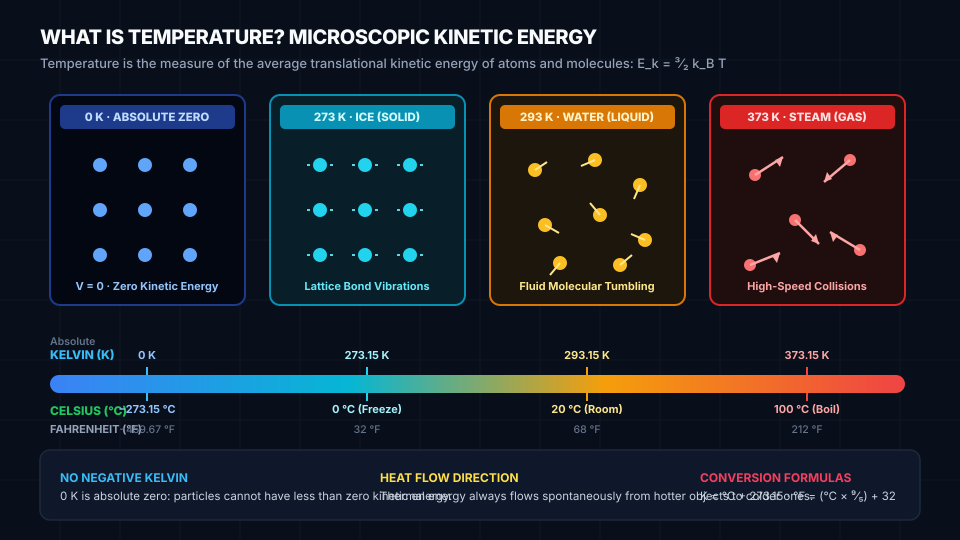

Physics · Modern & Thermal · Foundational
Hot & Cold
At the microscopic scale, temperature is not an invisible fluid or a separate substance—it is the average translational kinetic energy of jiggling atoms and molecules. Heat is the spontaneous transfer of that disordered kinetic energy from hotter objects to colder ones until they reach thermal equilibrium.
1. What Is Temperature? Atomic Motion & Kinetic Theory
For centuries, philosophers and early naturalists believed heat was a weightless, invisible fluid called caloric that flowed into substances when warmed. In 1798, Benjamin Thompson (Count Rumford) observed that boring brass cannons generated limitless heat through friction alone, demonstrating that heat is not conserved like a fluid, but is mechanical energy in microscopic motion.
Today, kinetic theory defines temperature (\(T\)) directly in terms of microscopic motion. For an ideal gas of particles of mass \(m\), the average translational kinetic energy \(\langle E_k \rangle\) per particle is directly proportional to absolute temperature:
where \(k_B \approx 1.3806 \times 10^{-23}\text{ J/K}\) is the Boltzmann constant.

2. Interactive Thermal Kinetic Simulator
Watch particles collide and transfer momentum. Use the slider or presets to adjust temperature from Absolute Zero (\(0\text{ K}\)) to over \(1,400\text{ K}\), or switch to the Dual Chamber Conduction mode to observe thermal equilibrium across a boundary.
3. Temperature Scales & The Zeroth Law
Three common temperature scales exist today, each founded on distinct historical reference points:
- Fahrenheit (°F): Established in 1724 by Daniel Gabriel Fahrenheit using an ice-water-ammonium chloride brine as \(0^\circ\text{F}\) and human body temperature calibrated near \(96^\circ\text{F}\) (later adjusted so water freezes at \(32^\circ\text{F}\) and boils at \(212^\circ\text{F}\)).
- Celsius (°C): Devised in 1742 by Anders Celsius based on pure water at standard atmospheric pressure: freezing at \(0^\circ\text{C}\) and boiling at \(100^\circ\text{C}\).
- Kelvin (K): The SI base unit of thermodynamic temperature proposed by Lord Kelvin in 1848. Unlike Celsius or Fahrenheit, Kelvin has no negative values—it is an absolute scale whose zero point is the complete absence of classical kinetic energy.
\(T_{\text{K}} = T_{\text{C}} + 273.15\) \(T_{\text{F}} = \frac{9}{5} T_{\text{C}} + 32\) \(T_{\text{C}} = \frac{5}{9}(T_{\text{F}} - 32)\)
The Zeroth Law of Thermodynamics
Formulated formally by Ralph H. Fowler in 1935, the Zeroth Law establishes the transitive property of thermal equilibrium:
"If two thermodynamic systems A and B are each in thermal equilibrium with a third system C, then system A and system B are in thermal equilibrium with each other."
This fundamental law is why thermometers work: if a thermometer bulb reaches equilibrium with object A and reads \(22^\circ\text{C}\), and later reaches equilibrium with object B and reads \(22^\circ\text{C}\), we know without placing A and B into contact that no net heat would flow between them.
4. From Absolute Zero to Stellar Cores
The universe spans an astounding dynamic range of temperatures, from nanokelvin laboratory extremes to multimillion-degree stellar plasmas:
5. Worked Example: Thermal Equilibrium Calculation
When two substances at different temperatures are placed in an insulated container (a calorimeter), energy conservation dictates that heat lost by the hotter substance equals heat gained by the colder substance: \(Q_{\text{lost}} = Q_{\text{gained}}\).
Sample Problem: A student pours \(200\text{ g}\) of hot water at \(80^\circ\text{C}\) into an insulated cup containing \(300\text{ g}\) of cold water at \(20^\circ\text{C}\). Both have specific heat capacity \(c = 4.184\text{ J/(g}\cdot^\circ\text{C)}\). Find the final equilibrium temperature \(T_f\).
Step 1: Set up the heat transfer equation.
Since both fluids are water, the specific heat capacity \(c\) cancels from both sides:
\(m_1 (T_1 - T_f) = m_2 (T_f - T_2)\)
Step 2: Expand and solve for \(T_f\).
\(m_1 T_1 - m_1 T_f = m_2 T_f - m_2 T_2\)
\(m_1 T_1 + m_2 T_2 = (m_1 + m_2) T_f\)
\(T_f = \frac{m_1 T_1 + m_2 T_2}{m_1 + m_2}\)
Step 3: Substitute numerical values.
\(T_f = \frac{(200\text{ g})(80^\circ\text{C}) + (300\text{ g})(20^\circ\text{C})}{200\text{ g} + 300\text{ g}} = \frac{16,000 + 6,000}{500} = \frac{22,000}{500} = 44.0^\circ\text{C}\).
Check Intuition: Because there is more cold water (\(300\text{ g}\)) than hot water (\(200\text{ g}\)), the final equilibrium temperature of \(44^\circ\text{C}\) lies closer to \(20^\circ\text{C}\) than to \(80^\circ\text{C}\), exactly matching physical conservation of energy.
6. Practice Problems
Easy1. What is the value of Absolute Zero on the Celsius scale?
Medium2. If the absolute temperature (\(T\)) of an ideal gas is quadrupled (\(4\times\)), what happens to the root-mean-square speed (\(v_{\text{rms}}\)) of its molecules?
Medium3. Room temperature is commonly taken as \(25^\circ\text{C}\). Convert this to Kelvin (to the nearest tenth).
Hard4. Two identical blocks of aluminum (\(m_1 = m_2\)) at \(100^\circ\text{C}\) and \(20^\circ\text{C}\) are placed in thermal contact inside an insulated chamber. What is the final equilibrium temperature in °C?